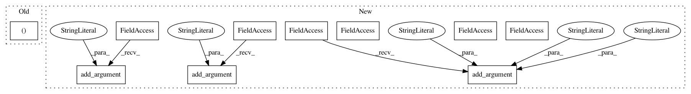

cb38a31627f152c22fb9e474c31b34da588e1134,starstack.py,,,#,192
Before Change
if __name__ == "__main__":
if len(sys.argv) < 3:
rgb1, rgb2 = make_test_images()
else:
rgb1 = read_image(sys.argv[1])
rgb2 = read_image(sys.argv[2])
After Change
if __name__ == "__main__":
parser = argparse.ArgumentParser(description="Stack astronomical images")
parser.add_argument("-t", "--test", dest="test", default=False,
action="store_true",
help="Test mode: generate images instead of reading files")
parser.add_argument("-d", action="store", default=".", dest="dir",
help="Directory to save files (default: .)")
parser.add_argument("imagefiles", nargs="*", help="2 or more input images")
args = parser.parse_args(sys.argv[1:])
if args.test:
register_all(make_test_images(), outdir=args.dir)
In pattern: SUPERPATTERN
Frequency: 3
Non-data size: 10
Instances
Project Name: akkana/scripts
Commit Name: cb38a31627f152c22fb9e474c31b34da588e1134
Time: 2020-07-26
Author: akkana@shallowsky.com
File Name: starstack.py
Class Name:
Method Name:
Project Name: eriklindernoren/PyTorch-GAN
Commit Name: fc9e5824ad7bd3094f5012dc6fc3d2348481a2f4
Time: 2019-04-02
Author: eriklindernoren@live.se
File Name: implementations/bicyclegan/bicyclegan.py
Class Name:
Method Name:
Project Name: erikbern/ann-benchmarks
Commit Name: be3c3b145f9c25d5629a96d616040ff652522a87
Time: 2017-05-11
Author: alef@itu.dk
File Name: plot.py
Class Name:
Method Name:
Project Name: akkana/scripts
Commit Name: cb38a31627f152c22fb9e474c31b34da588e1134
Time: 2020-07-26
Author: akkana@shallowsky.com
File Name: starstack.py
Class Name:
Method Name: